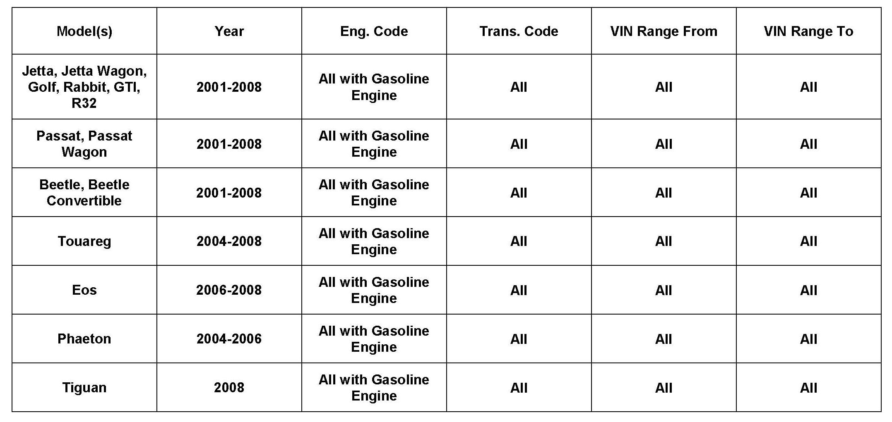
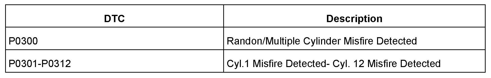
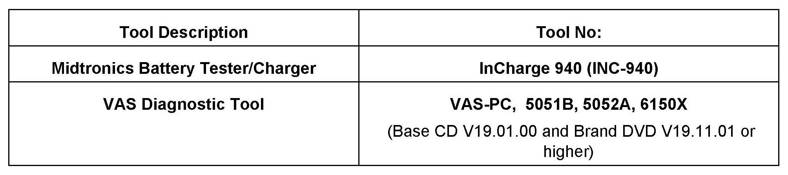

Engine Controls- Diag. Misfire After Campaign 28F/P1
01 12 04February 10, 2012
2028517

Vehicle Information
Condition
Diagnostic Misfire Assistance after performing Campaign 28F1P1 (Gasoline Engines Only)
The following symptoms may also accompany the customers concern:
^ Campaign 28F31P1 has been performed. (model year 2002-2007 only).
^ Rough idle.
^ Engine may have reduced performance without significant loss of power or stalling.
^ MIL ON or flashing.

^ One or more of the following DTCs are stored:
Technical Background
Generation II coils listed in Campaign 28F31P1 generally are not the root cause of engine misfire conditions. Replaced ignition coils have commonly been related to conditions such as:
^ Incorrect installation of ignition coils.
^ Loose or damaged electrical connections.
^ Circuit grounds.
^ Poor fuel quality.
^ A number of other reasons not directly related to ignition coil operation.
Proper GFF misfire diagnosis must be followed before replacing any ignition coils.
Production Solution
Not applicable.
Service
Ensure all campaigns and applicable TSBs have been performed
Due to multiple causes for engine misfire, please ensure all campaigns and applicable TSBs have been performed.
Repeat repairs must be carefully addressed to identify the root cause of the concern. Please utilize proper diagnosis steps to ensure that the vehicle is repaired properly and that the concern has been identified, repaired and verified.
Obtain information from the customer
To repair the vehicle correctly, obtain as much information as possible from the customer about the symptoms of the condition and when it occurred.
^ In what situation (turning, etc.) does the condition occur?
^ Under what environmental conditions (road conditions, weather, temperature, start conditions, etc.) does the condition occur?
^ What is the operating situation of the vehicle (activated electrical equipment, gear selection, etc.) when the condition occurs?
Can the complaint be reproduced?
Workshop procedure
1. Read out the data memory of all engine control modules, and note the environmental conditions on the DTC log.
^ If there are other entries in addition to combustion misfires, address the other entries before addressing the cylinder misfires.
^ If DTC P0301 - P0312 (Cyl.1 Misfire Detected - Cyl.12 Misfire Detected) is accompanied by P1250 (Fuel level too low), it is likely the faults occurred due to a low fuel level and not a malfunction of the coils.
^ Review all applicable TSBs related to cylinder misfires and ECM software improvements before diagnosing the misfire condition. For example, if data shows that a DTC was set during cold start, search ElsaWeb for TSBs related to cold start misfires.
2. Try to duplicate customer complaint based on the environmental conditions at the time the DTC was set.
^ The freeze-frame data gives important indicators for the traceability of the complaint, in particular if it occurs sporadically or at cold start.
3. Review the vehicle repair history for previous misfire or maintenance service that could be related to the current complaint.
4. Observe the requirements of Guided Fault Finding. Perform Guided Fault Finding in full according to the proposed sequence (test plan). Do not skip any steps.
5. Complete Guided Fault Finding correctly and set the readiness code.
Tip:
This is important to ensure that no subsequent faults occur due to the misfire.
6. In the case of single cylinder misfires:
^ Before replacing components, determine whether the misfire migrates to the other cylinders after exchanging the coils. If necessary, perform a test drive to ascertain this.
^ If the misfire migrates to the cylinder the coil was moved to:
^ Read the DTC memory, print and attach both diagnostic logs (before and after) to the repair order.
^ Return both coils to their original cylinders, and only replace the defective coil.
7. Verify repair under the same environmental conditions (e.g.: engine speed, engine load value, vehicle speed, coolant temperature, intake air temperature, ambient air pressure, voltage at terminal 30, etc.) as noted on the DTC log.
Warranty
Information only.

Required Parts and Tools
No Special Parts Required.
Additional Information
All part and service references provided in this Technical Bulletin are subject to change and/or removal. Always check with your Parts Dept. and Repair Manuals for the latest information.